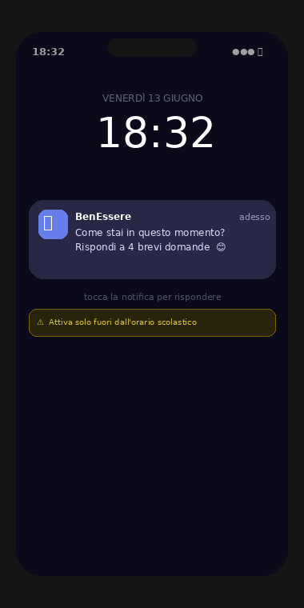
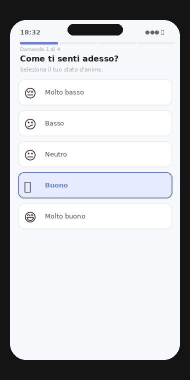
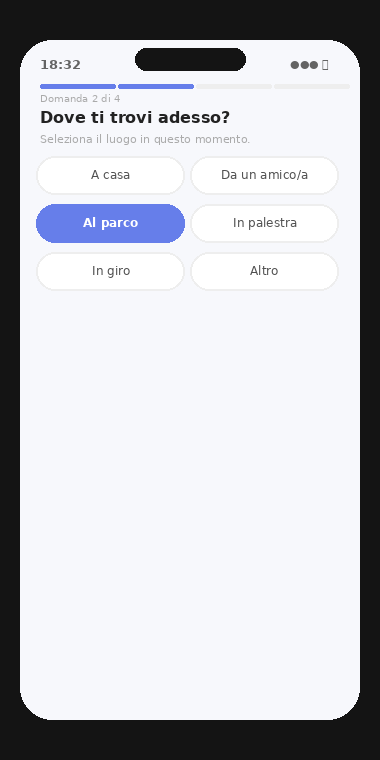
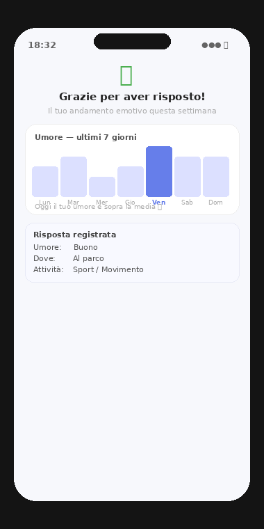

Metodologia
Methodology
La Valutazione Ecologica Momentanea (EMA) cattura emozioni, comportamenti e contesti multipli volte al giorno, direttamente nella vita di tutti i giorni degli adolescenti.
Ecological Momentary Assessment (EMA) captures emotions, behaviors, and contexts multiple times per day, directly in adolescents' everyday lives.
L'app EMA
The EMA app
L'app invia notifiche in momenti casuali della giornata. Ogni risposta richiede meno di 2 minuti.
The app sends notifications at random times during the day. Each response takes less than 2 minutes.

Notifica
Notification

Umore
Mood

Contesto
Context

Feedback
Feedback
Qualità e durata del sonno, umore al risveglio, sensazione di riposo.
Sleep quality and duration, morning mood, sense of rest.
Umore, contesto sociale e fisico, NSSI, craving, attività fisica. 4–5 item per prompt.
Mood, social and physical context, NSSI, craving, physical activity. 4–5 items per prompt.
Umore serale, nota vocale, selfie, uso di sostanze, eventi della giornata.
Evening mood, vocal note, selfie, substance use, events of the day.
4 periodi di raccolta intensiva per anno, ripetuti per 3 anni. In totale ~18 mesi di dati.
4 intensive collection periods per year, repeated for 3 years. ~18 months of data in total.
Posizione e mobilità nel territorio
Position and mobility across territory
Attività fisica e movimento
Physical activity and movement
Uso del telefono e social media
Phone and social media use
Qualità e durata del sonno da sensori
Sleep quality and duration from sensors
Determinanti socio-ecologici
Socio-ecological determinants
I dati EMA individuali vengono integrati con variabili secondarie di contesto per studiare come l'ambiente urbano influenza la salute mentale.
Individual EMA data are integrated with secondary context variables to study how the urban environment influences mental health.
Parchi, aree verdi, NDVI per zona di residenza.
Parks, green areas, NDVI by residential zone.
Qualità dell'aria, rumore, inquinamento luminoso.
Air quality, noise, light pollution.
Caratteristiche del quartiere e dell'ambiente costruito.
Neighborhood and built environment characteristics.
Indici di reddito, disoccupazione e povertà per area.
Income, unemployment, and poverty indices by area.
Senso di comunità, reti sociali, fiducia interpersonale.
Sense of community, social networks, interpersonal trust.
Temperatura, umidità, eventi climatici estremi.
Temperature, humidity, extreme weather events.